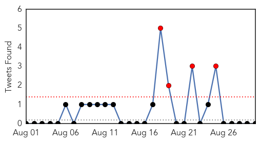
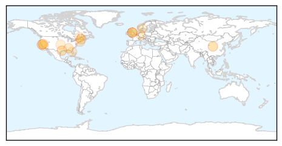
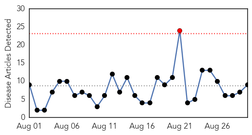
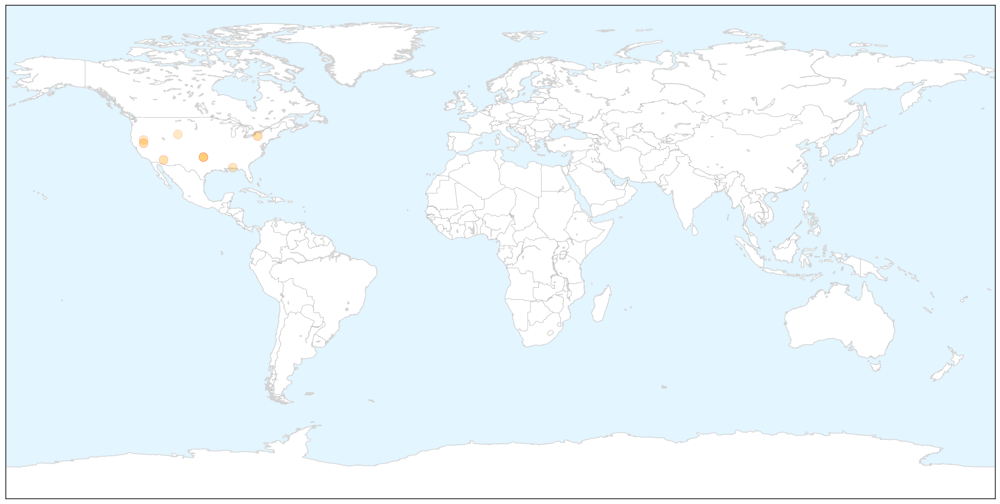

Unknown
30-Day Web Trend
0 alerts, 6 warnings

30-Day Twitter Trend
4 alerts, 0 warnings

Article Locations

Article Confidences

Top Articles:
- 0.953
- Legionnaires’ Disease May Break Out In San Quentin
- 0.935
- Parents urged to ensure children receive flu vaccine
- 0.917
- Chicago Tribune
- 0.857
- Health officials trying to stop spread of Legionnaires' disease
- 0.832
- Beware the woodland creatures who carry a dangerous disease
- 0.754
- West Chester University says buildings safe from legionella bacteria
- 0.719
- Polio has been found in vaccinated man, stunning scientists
- 0.664
- Maine attains nation's best child immunization rates
- 0.645
- E. coli Outbreak in Canada Sickens 24 People
- 0.634
- DCH has average ranking in study
- 0.623
- Dog virus spreading in Rhode Island
- 0.570
- Houston boy, 14, dies after battle with brain amoeba
- 0.569
- UN announces sanitation and hygiene plan towards eradicating tropical diseases by 2020
- 0.546
- Inmate visiting cancelled this weekend at San Quentin for family and friends
- 0.538
- Rheumatoid Arthritis Retinal Vasculitis Florida West Palm Beach
- 0.522
- FRANCE OPTING OUT OF VACCINES
Top Tweets:
-
No tweets found for Aug 30, 2015
West Nile Virus
30-Day Web Trend
1 alerts, 0 warnings

30-Day Twitter Trend
0 alerts, 0 warnings

Article Locations

X

Article Confidences

Top Articles:
- 0.989
- California and Arizona top nation in West Nile virus cases
- 0.985
- Sparks resident positive for West Nile, no symptoms
- 0.984
- Virus-carrying mosquitoes found in Goshen
- 0.943
- State health officials report 2nd West Nile death of 2015
- 0.924
- Health officials: Oklahoma's second West Nile death confirmed
- 0.793
- Mosquito Borne Illness Alert Continues After West Nile Cases Confirmed
- 0.744
- Washoe County identifies person infected with West Nile
- 0.681
- Wyoming State Veterinary Laboratory director issues warning about disease
- 0.520
- Washoe County identifies person infected with West Nile
Top Tweets:
-
No tweets found for Aug 30, 2015